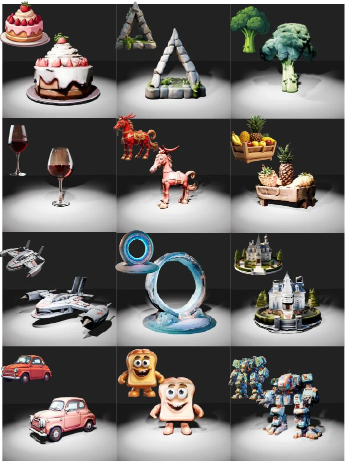

Efficient high-fidelity 3D generation
ROAD
Reciprocal-Objective Alignment of Discriminative Semantics
for 3D Shape Generation
1Huazhong University of Science and Technology · 2Megvii · 3Zhejiang University

The idea
Stop relearning the 3D world from scratch.
ROAD transfers rich semantic and structural priors from a frozen discriminative 3D foundation model into a 3D diffusion transformer—reducing the cost of high-quality shape generation without adding inference overhead.
Direct token-wise transfer is difficult because generative latents are holistic and order-agnostic, while discriminative 3D tokens preserve localized geometry. ROAD bridges this semantic-structural heterogeneity with two complementary objectives: global semantic condensation and permutation-invariant structural matching.
Holistic Semantic Condensing
Condenses unordered features into a global semantic anchor, guiding the model toward the correct high-level shape manifold—what to generate.
Structural Optimal Alignment
Uses similarity-based Hungarian matching to align two unordered token sets and supervise fine geometric details—how to generate them.
Training-only supervision
The 3D foundation model is frozen and used only during training. The deployed generator keeps the original inference path and cost.
Method
Reciprocal alignment at two granularities.
ROAD integrates a frozen 3DFM beside the standard diffusion training path. Global and token-level constraints transfer discriminative priors while preserving the flexibility of the native generative flow.

Why naive alignment fails
Generative and discriminative 3D tokens encode different structures.
VAE latents aggregate global surface context and are permutation invariant. 3DFM tokens are formed from local point-cloud neighborhoods. ROAD explicitly respects this mismatch instead of assuming rigid positional correspondence.

Efficiency & quality
Competitive generation with a fraction of the resources.
32.3 Uni3D-Score33.7 ULIP-Score


Interactive showcase
Inspect ROAD outputs in 3D.
Drag to rotate, scroll to zoom, or open the GLB file. Select any example below to compare its conditioning image and generated asset.
Interactive GLB
More generations
Diverse assets, consistent geometry.

Citation
Build on ROAD.
Please use the citation below for the current project release. Update the venue field when the final bibliographic record becomes available.
@misc{luo2026road,
title = {ROAD: Reciprocal-Objective Alignment of
Discriminative Semantics for 3D Shape Generation},
author = {Luo, Xiao and Du, Mingyang and Zhou, Xin and
Feng, Tianrui and Chen, Xiwu and Li, Xiaofan and
Zhang, Jiangning and Liang, Dingkang},
year = {2026}
}